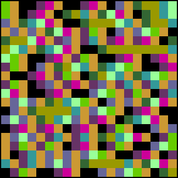

| To illustrate sensitivity to initial conditions, here are Kelly plots for s = 3.99 logistic maps, with initial value x = 0.5000 through x = 0.5020, in steps of 0.0001. |
| Note the first few colors remain unchanged, because the change in initial value is not large enough to alter the bins of the first few iterates. |
|  |
| Click the picture to slow the animation. |